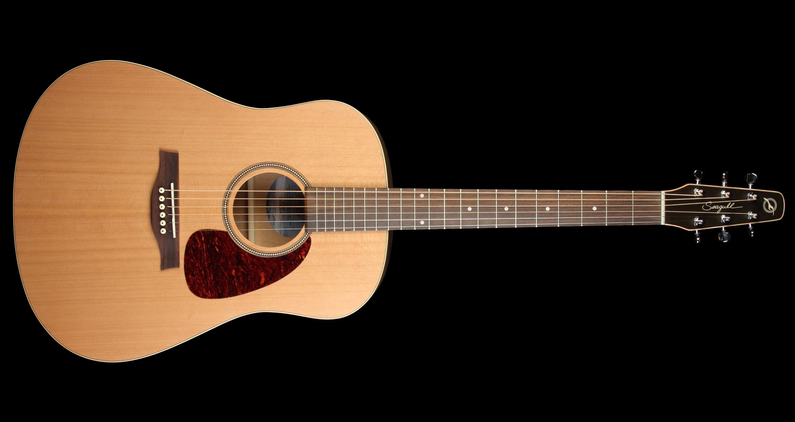

Привет, дорогие мои подписчики! Сегодня я, ваш Пен, решил поделиться с вами своим невероятным приключением. Весь день начался с неприятного запаха, которым меня разбудил. Оказалось, что вчера я перебрал с пиццей, и мой желудок решил сделать мне неожиданное утреннее напоминание о моей пищеварительной системе. Но хватит о грусном!
Другие приключения уже ждали меня в этот день. Я решил приключиться и украсть гитару у старого афериста. Без лишних шумов я проник в комнату, где Валера ведет свои стримы, и украл его любимую гитару. Это было непросто, но как же оно стояло того! С раритетной гитарой в руках я не мог удержаться от соблазна продать ее.
Я выставил объявление на популярном сайте авито и быстро нашел покупателя. Гитару Krolix NT200 удалось продать некоему Ахмеду за 27054 рубля. И сказать вам по секрету, я получил больше, чем ожидал.

Теперь, благодаря этим деньгам, я инвестировал в себя и порадовался
новому переносному компьютеру Asus с двумя гигабайтами оперативной
памяти и двумя ядрами, купленному в DNS. Теперь у меня есть все, чтобы
писать свой блог и делиться новыми историями с вами, мои дорогие
подписчики! Не забывайте подписываться на мой канал, ведь теперь я буду
радовать вас своими блогами каждый день!
Спасибо, что остаетесь со мной, ваш Пена <3